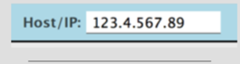
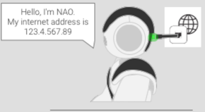

Get Robot settings¶
 |
During this step you will: install setting tools on your computer. |
Before starting¶
Make sure you have a computer running one of the supported Operating Systems:
| OS | Version |
|---|---|
| Linux | Ubuntu 16.04 Xenial Xerus - 64bits only |
| Windows | Microsoft Windows 10 64bits |
| Mac | Mac OS X 10.12 Sierra |
Download Robot Settings¶
On your computer, download the Robot Settings Installer version according to your operating system:
| OS | Version | Download |
|---|---|---|
| Linux | Ubuntu 14.04 Trusty Tahr - 64bits only | |
| Windows | Microsoft Windows 7 and 8.1 | |
| Mac | Mac OS X 10.12 Sierra |
You can download previous versions of Robot Settings from Community site (SoftBank Robotics account needed).
Launch and connect Robot Settings¶
| Step | Action |
|---|---|
Install and launch Robot settings. 
|
|
Remove the hatch behind the head of the robot to access to the Ethernet socket and plug an Ethernet cable. 
|
|
Connect the Ethernet cable to an Ethernet socket connected to Internet. Note The robot is connected to Internet when the two green lights are highlighted at the back of NAO‘s head. |
|

|
|
Press the Enter key to connect to the robot, while the Host / IP field is focused to connect to NAO. 
Warning If the connection fails, please check the following cases and try to reconnect: Check if the entered IP address has dots between numbers. Check if NAO is connected to Internet via the Ethernet cable: the two green lights should be highlighted, and NAO is able to give his IP address. You may connect your computer to the same network as NAO. You can check on which network NAO is by plugging the Ethernet cable to your computer. NAO and your computer can be on the same network while NAO is connected with an Ethernet cable and your computer is on WiFi. 
You may try to shut down and restart NAO, by pressing 3 seconds on his Chest button. 
|
Next step: Configure NAO.